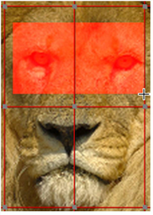

GridWarp 节点允许您通过将图像信息从一个 Bezier 网格传输到另一个网格来扭曲图像。使用此节点时，首先定位源网格，该网格定义了扭曲的位置。接下来，定位目标网格，该网格定义将图像扭曲到的位置。此网格可以是源网格的副本，也可以单独定义。操纵目标网格时，相应的扭曲将应用于源图像。
GridWarp 节点还包括用于设置扭曲动画和选择用于删除扭曲可能导致的任何瑕疵的过滤级别的控件。
| 1。 | 选择 变换 > 灰矮星 在要扭曲的图像后插入一个 GridWarp 节点。 |
| 2. | 连接 Src 输入和图像的查看器。 |
| 3. |
当 GridWarp 属性面板打开时，默认情况下，目标网格覆盖显示在查看器中。您可以显示或隐藏在来源国和目的地国网使用
和
|
注意:
只要您没有修改任何控制点，GridWarp 会自动尝试将网格调整为图像大小。
如果网格与输入图像的大小不同，请单击
调整到图像
两个按钮下
源网格
和
目的地网格
.

| 4. | 使用查看器工具控制网格的以下方面: |
注意:
您可以使用复制和粘贴按钮
 在网格控件中，在源网格和目标网格之间复制控制点关键帧。
在网格控件中，在源网格和目标网格之间复制控制点关键帧。
|
控制 |
它做什么 |
|
输出 |
控制查看器中显示的输出: • 源 -源图像和源网格。 • 源 扭曲 -源图像和目标网格。 • 目的地 -目标图像和目标网格。 • 目的地 扭曲 -目标图像和源网格。 • 变形 -变形图像，由 翘曲 和 混合 参数和两个网格。 |
|
|
启用时，查看器中显示的网格取决于 输出 设置。例如，如果 输出 设置为 源扭曲 ,只有目标网格出现在查看器中。 |
|
|
启用时, 源 网格显示在查看器中。此控件可以由 按钮。 |
|
|
启用时,
目的地
网格显示在查看器中。此控件可以由
|
|
|
启用后，对网格中的点的更改将自动键入。您可以禁用该选项并手动设置关键帧，如果您打算使用曲线编辑器，这将特别有用。请参阅 动画扭曲 . |
|
波纹 |
波纹关键帧允许您在一个帧上调整笔触/形状点的位置，并在所有帧或指定帧范围内对该点应用相同的相对调整。 • 关闭 -波纹编辑被禁用。 • 所有 -波纹序列中的所有帧。 • 从开始 -波纹帧从 首先 框架到 当前 框架。 • 要结束 -波纹帧从 当前 框架到 最后 框架。 • 范围 -波纹内的所有帧 从 和 到 字段。 |
|
标签点 |
启用后，将标记网格上选定的点 X，y 从原点测量。 |
|
|
启用后，变换控制柄会覆盖所有选定的点。 |
|
|
启用后，在网格上移动点时将显示低分辨率预览。渲染完成后，将更新低分辨率图像。 |
|
部门 |
在字段中输入修改网格所需的分段数。划分的数量必须在 3 到 20 之间。 也可以单击并按住滑块以覆盖细分的预览。GridWarp 尝试根据当前控制点分布修改网格。 注意: 当使用预览时，精度可能会在较低的部门受到影响，在较高的部门可能需要额外的平滑。 |
|
|
单击以启用 编辑 模式。选择单个点、使用 shift-click 选择多个点或选择选框点组。 编辑模式还允许您调整点之间的曲线以产生失真。 |
|
|
单击以启用 插入 模式。单击水平线可将垂直线添加到网格中，反之亦然。 |
|
|
单击以启用 删除 模式。单击网格线将其从查看器中删除。 |
|
|
单击以启用 绘制边界 模式。光标变为十字线，您可以在查看器中拖动选框来创建自定义网格。 |
|
|
单击以细分网格 列 在当前选定的区域。 |
|
|
单击以细分网格 行 在当前选定的区域。 |
|
|
单击以细分网格 列 和 行 在当前选定的区域。 |
| 5. | 修改要扭曲的区域周围的网格。通常，您希望网格符合源图像的主题。例如，如果您正在扭曲动物的眼睛，您需要创建跟随眼睛边缘的网格线。 |
注意: 如果在移动点时两个网格都可见，并且两个网格的同一个点位于彼此的顶部，则两个点都被移动，并且不会看到任何失真。
可以使用网格线来隔离不希望扭曲的区域。您可以通过在要扭曲的区域和不想更改的区域之间添加网格线来做到这一点。
|
|
|
| 无限扭曲。 |
同样的扭曲仅限于
有网格线的小区域。 |
选择点时，四个切线控制柄会出现在它周围。可以使用这些控制柄修改连接点的曲线。

要一起移动几个点，请在它们周围画一个选框，并使用出现的变换覆盖。
您也可以使用 绘制边界 工具在查看器中快速设置用户定义的网格。单击 绘制边界 并在图像的所需区域上绘制一个字幕。
|
 |
|
| 的 绘制边界 字幕。 | 生成的用户定义网格。 |
注意:
也可以使用曲线编辑器编辑曲线，方法是右击控制点并选择
曲线编辑器
>
点
,
切线
,或
两者都
.
曲线出现在涂料表上，就像 GridWarp 一样长
属性
面板是开放的。
| 6. | 在要扭曲图像的区域中，将网格上的点拖到新位置。当您单击某个点时，该点会改变颜色，以指示它是否处于焦点状态 (默认情况下为绿色) 以及它是否设置了表达式 (默认情况下为红色)。您可以更改上的默认颜色 观众 首选项中的选项卡。 |
这些区域中的像素将按照移动点的方向移动。附近区域的像素也会被移动以适应变化，但是从重新定位的点处得到的失真会减少。如果不希望附近的区域扭曲，请在区域和要移动的点之间添加更多网格线，然后将点拖动到新位置。
提示:
您可以使用数字键盘按单个像素轻推选定的控制点
4
和
6
向左和向右轻推，或
8
和
2
向上和向下轻推。
按住
转变
使用数字键盘将选定的点移动 10 像素，例如,
6 班
将选定的点向右移动 10 个像素。
| 7. | 要更好地查看扭曲的图像是什么样子，请按 Q 在查看器上关闭覆盖。 |

要比较原始图像和扭曲图像，请按 D 在 GridWarp 节点上禁用并启用它。如果您看到不想扭曲的区域发生变化，请返回修改网格。
| 8。 | 如有必要，设置网格动画以匹配源图像中的任何移动。有关如何执行此操作的更多信息，请参见 动画扭曲 . |
| 9. | 您可以调整下表中描述的控件以增强结果。 |
|
Control |
What it does |
|
GridWarp 标签 |
|
|
通道 |
设置受失真影响的通道。 |
|
面具 |
连接遮罩输入并设置要用作遮罩的通道。默认情况下，遮罩仅限于此通道的非黑色区域。 使用复选框修改遮罩属性: • 注入 -复制 面具 预定义的输入 面具。 频道。注射面具可以让你在下游使用相同的面具。 • 反转 -反转面具通道的使用，以便面具被限制在面具的非白色区域。 • 边缘 -模糊面具的边缘。 |
|
背景 |
扭曲的图像在未扭曲背景的顶部渲染。此控件设置用作背景的内容: • 黑色上 -在恒定的黑色图像上渲染扭曲的图像。 • 关于 src -在连接到的图像顶部渲染扭曲的图像 Src GridWarp 节点的输入。 • 在 dst 上 -在连接到的图像顶部渲染扭曲的图像 Dst GridWarp 节点的输入。 • 关于 bg -将扭曲的图像渲染到连接到的背景图像的顶部 Bg GridWarp 节点的输入。 |
|
背景混合 |
在 GridWarp 节点的输出 (0) 和您从 背景 下拉菜单 (1)。 |
|
将 bbox 设置为 |
设置边界框属性。 |
|
渲染选项卡 |
|
|
子网格
|
设置在网格中的 Bezier 曲线之间创建的细分数。值越高，网格线之间的失真越准确，但渲染时间会增加。 |
|
过滤器 |
选择适当的过滤算法 (请参见 选择过滤算法 )。 |
|
选项选项卡 |
|
|
源颜色 |
设置源网格颜色。 |
|
目的地颜色 |
设置目标网格颜色。 |
|
|